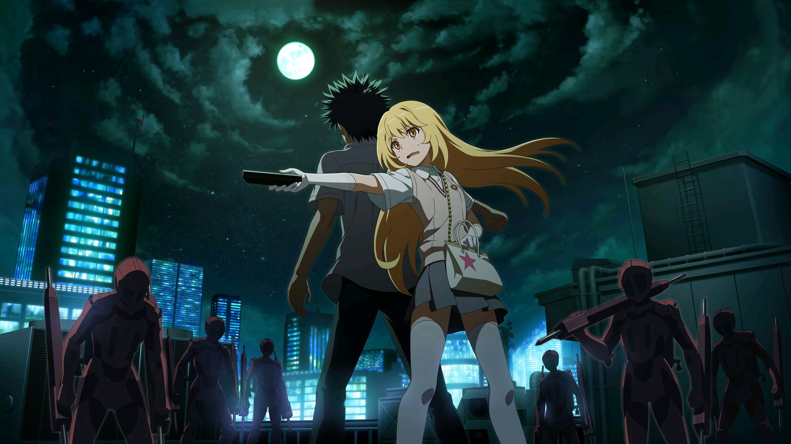
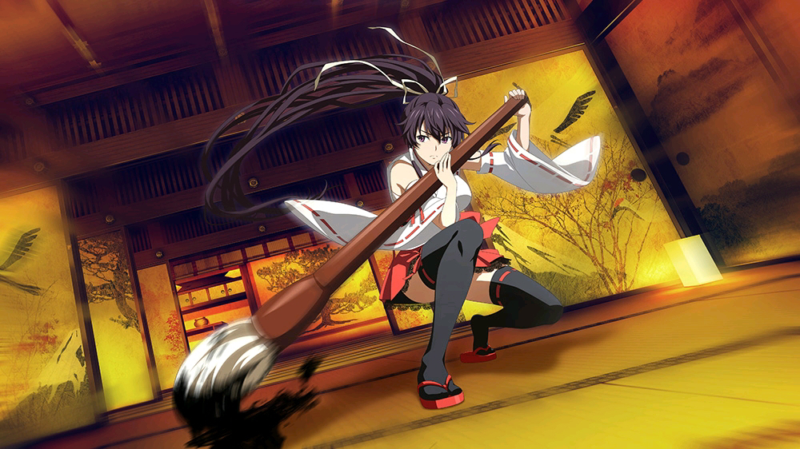
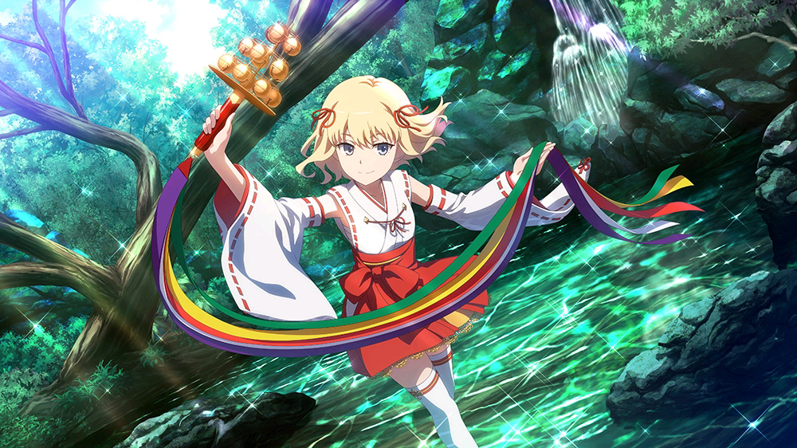
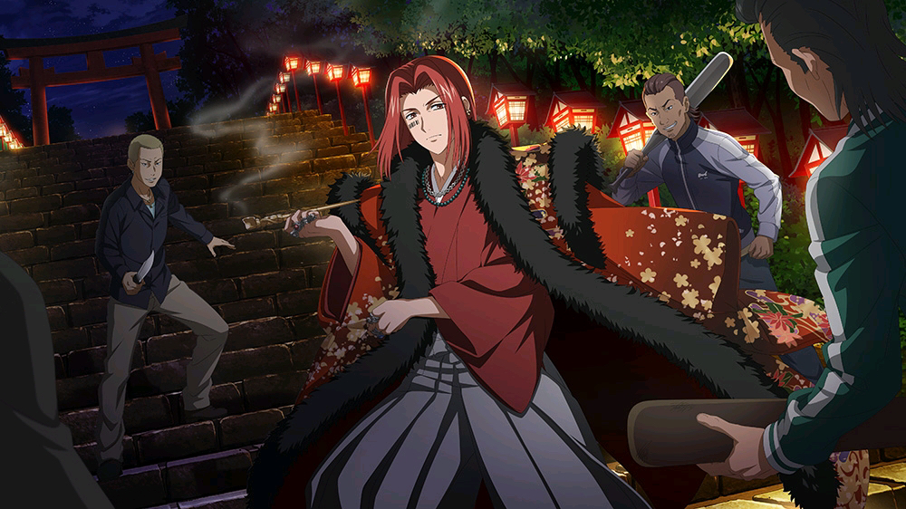

- 
- 
- 
- 
- 1
- 2
- 3
- 4
- 5
- 6
- 7
- 8
<
>

政府将东京西区开发较慢的区域一次全部收购后，建立起这座“学园都市” ，面积约东京都的三分之一 。 这个“学校之城”包含了数十所大学与数百所小学、初中及高中，总共有一千个以上的大小“研究机构” 。 人口将近230万，八成的居民（超过一百八十万）都是学生。 “学园都市”拥有世界上最尖端的科技，比外界先进二三十年，是科学世界的领导者。 学园都市的由统括理事长亚雷斯塔·克劳利花了超过五十年打造，由“统括理事会”全权管理。 由于技术、研究多数都是高度机密事项，学园都市内的警戒体制非常严格，对人员进出有严格的限制。 学园都市是一个由二十三个学区构成的巨大的教育机构的集合体，以发掘超能力而提供特殊的教育课程，主要靠从外部招收学生。 除了教育机构，还有面向学生研究设施，生产、商业设施，国际展示场，国际机场等等在都市内生活的所需要的生活设施都齐备。 学园都市基本上是采取排外政策，不仅被围墙所包围，而且还有专门阻挡入侵者的警卫部队。 学园都市的内外周围随时有人造卫星在监视着。 学园都市的学生，大部分居住在学校的宿舍中，并在各个学校中接受能力开发。 学园都市的学生大都借由药物、催眠术与通电刺激等方式取得超能力。 有各种类型不同能力，以范围和威力分为无能力者（Level0）、低能力者（Level1）、异能力者（Level2）、强能力者（Level3）、大能力者（Level4）、超能力者（Level5）、绝对能力者（Level6），实际绝对能力者只是理论上存在进化为Level6的可能，并没有哪一个角色成功进化为Level6。 并每隔一定时间会进行身体检查，重新测定一次，但学生中的六成是无能力者，而学园都市中超能力者也只有七人。
CV:佐藤利奈科学：LEVE5电击使
CV:阿部敦科学：LEVE0幻想杀手
CV:井口裕香魔法：禁书目录
CV:新井里美科学：LEVEL4空间移动
CV:伊藤静魔法：圣人
CV:冈本信彦科学：LEVEL5矢量变换
CV:樱井浩美科学：LEVEL4坐标移动
CV:谷山纪章魔法：火焰术士
CV:阿澄佳奈科学：天使-五行机关
CV:小清水亚美科学：LEVEL5原子崩坏
CV:胜杏里魔法：东方术士科学：LEVEL0肉体再生
CV:佐佐木望科学：LEVEL0-3御坂美琴克隆体(20000个)
Index: @KAZUMA KAMACHI/ASCII MEDIA WORKS/PROJECT-INDEX IndexI: O KAZUMA KAMACHI / ASCII MEDIA WORKS / PROJECT- INDEX I Index The Movie: @Kazuma Kamachi / ASCIIMEDIA WORKS / PROJECT-INDEX MOVIE Railgun: @KAZUMA KAMACHI / MOTOI FUYUKAWA / ASCII MEDIA WORKS / PROJECT-RAILGUN RailgunS: @KAZUMA KAMACHI / MOTOI FUYUKAWA / ASCII MEDIA WORKS / PROJECT-RAILGUN S